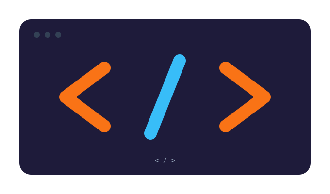
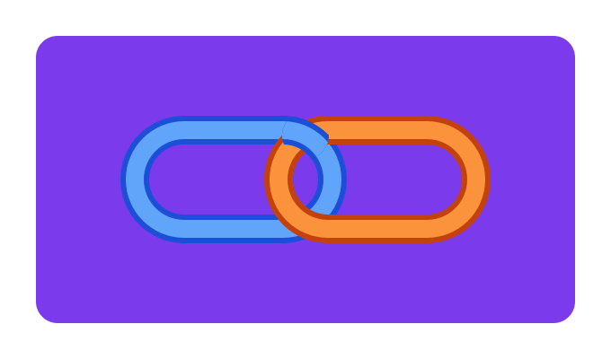

Why semantic HTML matters
Tags like header, main and article tell browsers and screen readers what each part of a page is for.
Blog

Tags like header, main and article tell browsers and screen readers what each part of a page is for.

Relative links, absolute links and anchors: how I connected three pages into one site.
Ordered, unordered and nested lists, and why a navigation menu is really just a list.
A div says nothing about its content. A nav says “this is navigation”. Search engines and screen readers use that meaning. The tags I used here:
header and footer for the top and bottom of the pagemain for the content unique to each pagesection and article to group related contentfigure and figcaption for images with captionsI used three kinds of link:
about.html to move between my own pageshttps://github.com/… with target="_blank" for other sites#lists to jump to a spot on the same pageUse an ordered list when sequence matters and an unordered list when it doesn’t. Lists can also be nested: